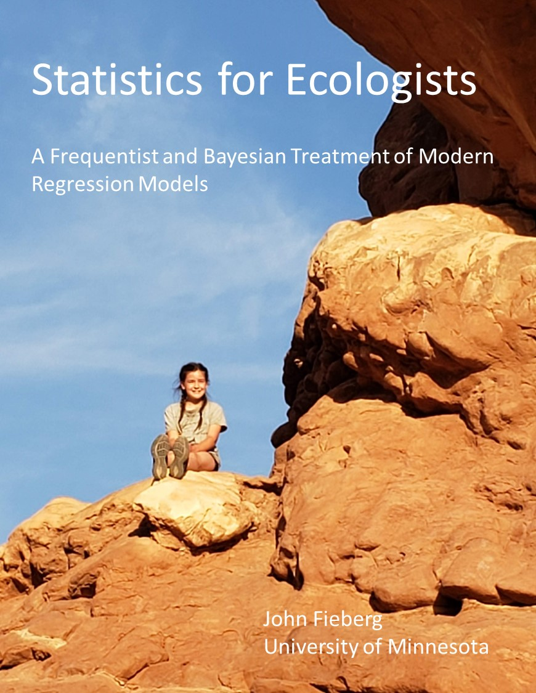

Statistics for Ecologists
2024-10-25
Thank you for your interest in the Statistics for Ecologists book. The most recent version of the book can be found here.
Older archived versions (with comments from readers) can be found at the URLs below:
- Beta version
- First version prior to publishing
- Second verion, this is the first edition that was published as a pdf by University of Minnesota Library Publishing

Cover photograph:
Caroline Fieberg at Arches National Park, summer 2021. Photo taken by John Fieberg.
Suggested Citation:
Fieberg, John. (2024). Statistics for Ecologists: A Frequentist and Bayesian Treatment of Modern Regression Models. University of Minnesota Libraries Publishing. Retrieved from the University of Minnesota Digital Conservancy. https://doi.org/10.24926/9781959870029
License:
This work is licensed under a Creative Commons Attribution 4.0 International License.